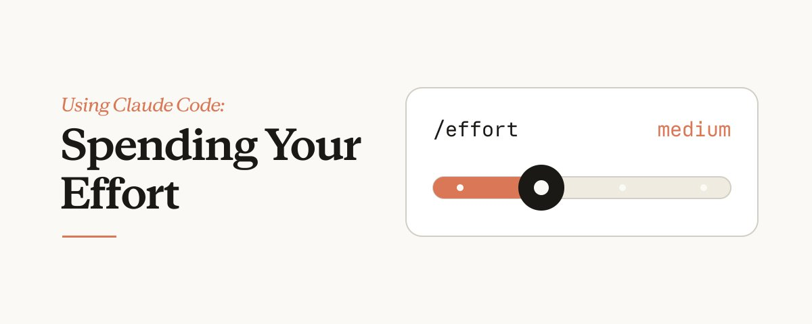
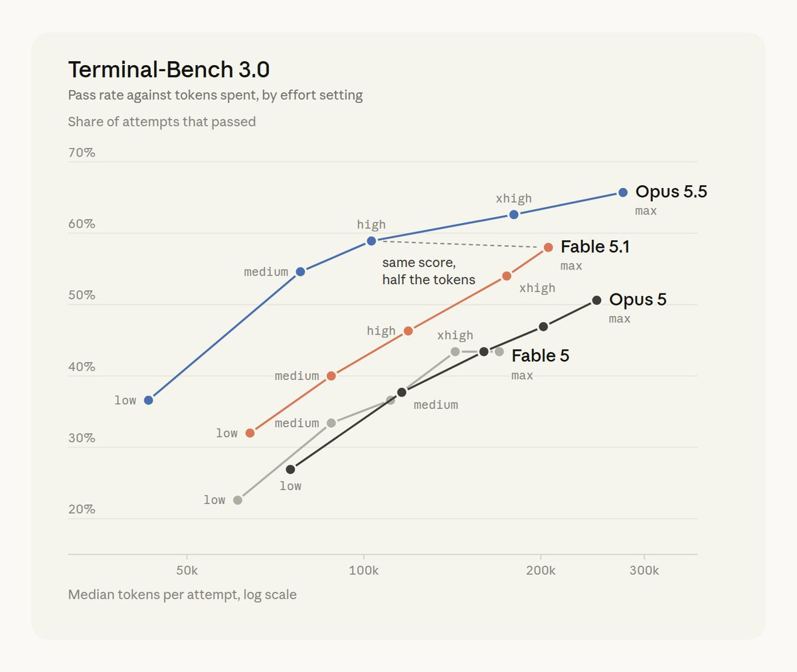
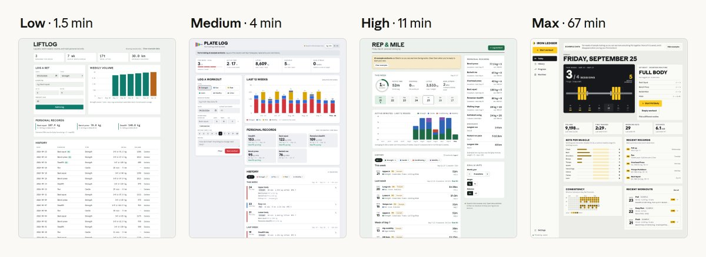
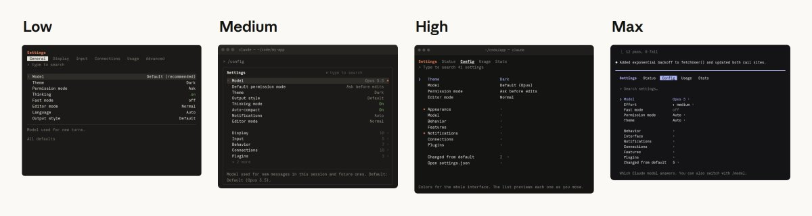
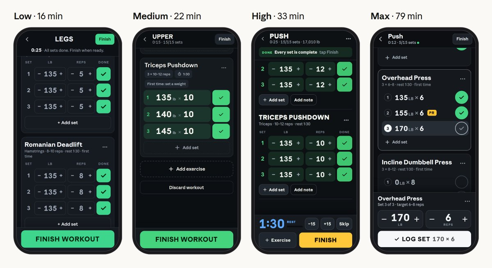
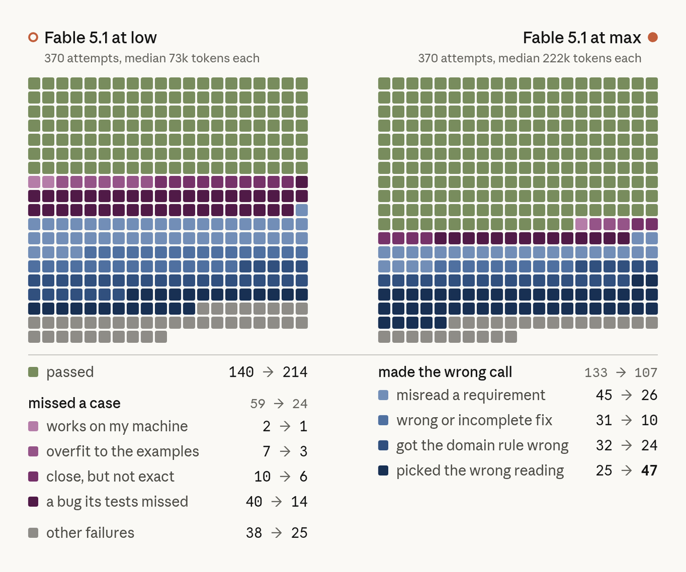
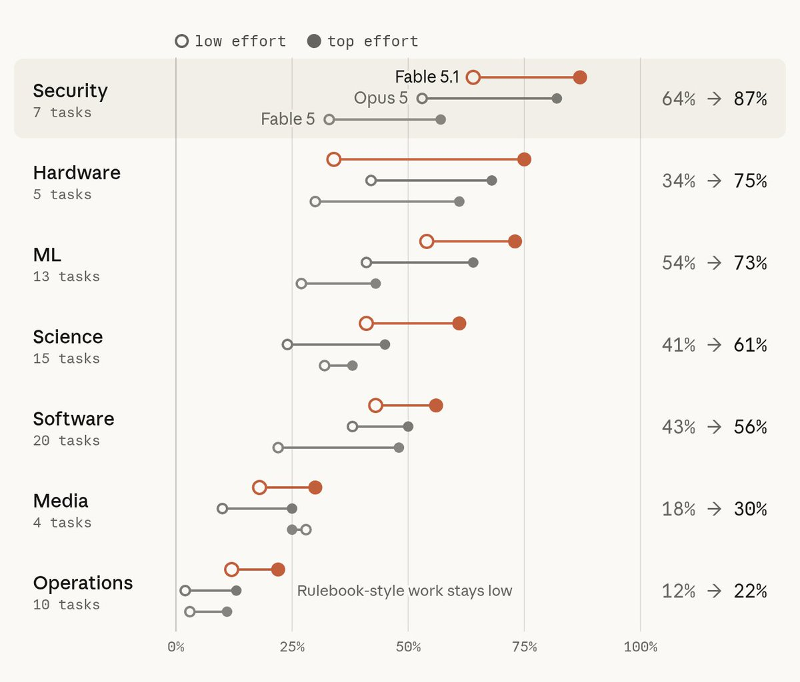
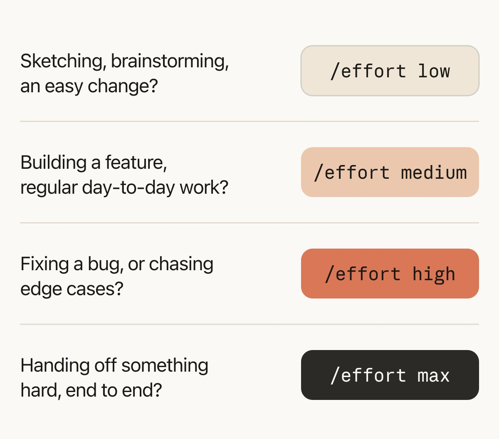

把 effort 花在刀刃上
Using Claude Code: Spending your effort
- 分类
- AI
- 来源
- X · @trq212
- 原文
- 整理
- 作者
- Thariq / @trq212（Claude Code @ Anthropic）
- 原文链接
- X 帖 · claude.dev
先看这五句 / Highlights
译者补充，不是原文。
effort调的是验证与自主判断强度——更高档位让 Claude 多做边例测试、多下独立判断；不破坏 Claude Code 里的prompt cache。- 别凡事 Max。日常软件工程用
low/medium快速出稿并保持在环；硬件、安全、代码审查等需要彻底验证时再上high/max。 - 作者常用循环：先让模型面试你补全规格 →
low/medium实现 → 人工审大意 →high做验证与测试。 - 提高 effort 主要砍掉「缺边例」失败（图中紫块），对「路线错了」（蓝块）帮助有限——方向错了，烧更多 token 也救不回来。
- 经验法则：草图/头脑风暴用
low；日常功能用medium；修 bug / 追边例用high；端到端难活与安全审计用max。对话中途可用/effort切换。

/effort 滑条示意（图中停在 medium）。作者 Thariq / @trq212。交互版说明见 claude.dev/blog/spending-your-effort。开篇
我们最新 Claude 模型最棒的一点之一，是它们能响应 effort，同时又不打断 Claude Code 里的 prompt cache——但我收到很多用户问这个问题。effort 到底是什么？什么时候该用哪一档？为什么我们需要 effort？
为了回答这些，我决定深入评估（evals），并在日常工作里自己测不同 effort。
注：这篇的更多交互图示与说明，见 https://claude.dev/blog/spending-your-effort/
总的来说，我发现 effort 是很好的旋钮：用来改变 Claude 做多少验证与边例测试，以及它用多少自己的判断。
额外 effort 在验证与边例测试更有用的领域会给出更好结果——比如硬件、代码审查、安全。
但对快速把事做完、并与 Claude 保持在环（in the loop）来说，low 和 medium 就很合适。
对正常软件工程，我现在跑的循环是：先让模型面试我，再在 low/medium 上实现，审它建了什么，然后在 high 上做验证。
什么是 effort
总的来说，effort 给模型一个近似值：你希望它在这项任务上花多少算力。它多少也对应你对任务难度的建模。
可以这么想：如果有人让你连续十二小时做某件事，你可能会假设他们就是要你去做、并且要你尽力。如果有人让你在一小时内做同一件事，你会尽量交出满足任务要求的最好版本，然后预期从那里迭代。
或者，你可能会顶回去：说这活至少要三小时，然后花三小时交付。
你应该用同样方式理解 effort。Claude 总会尽力把你的任务做得合理；但更高的 effort 会让 Claude 在判断与验证上采取更多独立行动。
Effort 曲线
Fable 5.1 和 Opus 5.5 的 effort 曲线是我们目前最好的：每一档如果基准分数上升，消耗的 token 也会上升。下面这张图是 Terminal Bench 3.0 按 effort 分的分数，来自我为这篇文章做的评估跑次。

effort 设置看「通过率 vs 中位 token（对数轴）」。曲线含 Opus 5.5、Fable 5.1、Opus 5、Fable 5；点标注 low / medium / high / xhigh / max。图中有一条虚线标注 same score, half the tokens（同分、约一半 token）：Opus 5.5 的 high 与 Fable 5.1 的 max 分数接近，但 token 大约只有一半。请以原图为准，勿把视觉近似当成精确读数。但这在实践里意味着什么？为评估这一点，我在不同 effort 档位上试了好几项任务，并仔细翻了基准结果。
用 effort 来构建
理解模型怎么工作的最好办法，是跑实验。我在 Opus 5.5 上用好几档 effort 做同一批任务，看它会干哪些活。我试了很广的一类工作，这里用几个玩具例子说明。
欠指定的构建任务
如果我让 Claude「做一个个人健身与训练追踪 App」，effort 会大幅改变 App 丰满到什么程度，也会让 Claude 在过程中做更多选择。在 low 上，健身 App 只是一个日志加一张简单图；更高档位上 App 更复杂、细节更多；到 max 会出现热力图。

effort 下的结果（屏上英文标题从左到右大致为 LIFTLOG / PLATE LOG / REP & MILE / IRON LEDGER）。标签为 Low · 1.5 min → Medium · 4 min → High · 11 min → Max · 67 min：从简单日志+柱状图，到更完整的周视图与 PR，再到侧栏导航与热力一致性图。越高档位，Claude 替你做的产品决策越多。如果我想要一个可迭代的简单底座，low 就能搞定。如果我想要 Claude 的最佳一枪（one shot），才上 max。
轻度指定的设计任务
如果任务已经相当指定，但我还想和 Claude 一起探索呢？举例：我试着让它重新设计 Claude Code 里的 /config 菜单。每一遍大致都是同一思路——用子菜单和更好的搜索。
在 low（大约 1 分钟）上，我得到一个能传达想法的交互草图，但看起来不太像 Claude Code。
在 max（大约 28 分钟）上，我得到很像 Claude Code 的 mockup，还附带一堆不同流程的 walkthrough。
如果我的目标是迭代并给反馈，low 会快得多。但 max 一上来就更抛光。对这个具体任务，我更倾向用 low 先理解 Claude 的愿景。

/config 菜单重设计——左 Low · 1 min（交互草图，形似但不像 Claude Code），右 Max · 28 min（更接近产品 UI，并带流程 walkthrough）。两边大方向都是子菜单 + 更好搜索；差别主要在抛光与自主加戏的量。高度指定的构建任务
如果我给 Claude 很多细节呢？我试着让 Claude 就健身 App 对我做深度面试，再把那份规格交给不同模型、不同 effort 去实现。
我发现有了这份规格，模型行为相似得多。我得到的设计看起来相当接近，实现也类似，只是细节不同；在 max 上，Claude 会花一些时间简化其中几处细节。

effort 下结果更接近（布局与功能大体同构，细节不同）。说明：规格越完整，effort 带来的「替你做选择」空间越小；高档位更多花在打磨与简化上。启示
对常规软件工程，尤其是新功能，该用哪档 effort 很大程度上取决于我想在环多深。low 让 Claude 快速给出起点；更高档位能多干一些活，但 Claude 也会替我做更多假设。
一个特别管用的功能开发循环，是我一直在用的：
- 给 Claude 一份规格，并让它就我遗漏的细节面试我
- 在
low上实现 - 审一遍确认大意正确，需要时继续在
low上迭代 - 在
high上做验证与测试
困难任务上，effort 档位如何影响输出
但这些显然是玩具例子——Claude 完全有能力完成。那当差别是「Claude 能不能完成任务」时呢？
要找到这些难问题，就得去看基准；于是我深入了一个我喜欢的：Terminal Bench 3，一个社区来源的基准。
Terminal-Bench 3.0 的问题大致可分成安全、硬件、ML、科学、软件、运维、媒体等类别。你可以在这里看到全部题目：https://github.com/harbor-framework/terminal-bench/releases/tag/v3.0.0，它们来自社区，任何人都可以贡献。
值得读一读，感受这些模型面对的问题类型。很多任务的范围与野心让我吃惊——比我日常会碰到的平均任务复杂得多。
例如，其中一些任务包括：
- 硬件（retro-console-soc）：用 Verilog 做一台能塞进小 FPGA、并能渲染测试 ROM 的 8-bit 游戏机。
- 科学（takens-embedding-lean）：在 Lean 4 里形式化证明 Takens 嵌入定理。
- ML（mp-checkpoint-consolidation）：把 mixture-of-experts checkpoint 的 16 个分片合并成一个能复现参考 logits 的文件。
- 运维（intrastat-meldung）：端到端跑完一家公司的月末欧盟贸易统计申报。
- 媒体（layout-config-recreation）：把一张海报图重建成可编辑的排版文件。
边例很多时，更高 effort 更有帮助
读 Terminal Bench 3 结果后，我的主要收获是：更高 effort 最适合隐藏边例很多的任务。
一个干净的例子是 html-js-filter——一道 Terminal-Bench 3.0 题，要求做一个 HTML sanitizer，剥掉所有把 JavaScript 走私进页面的方式。Fable 5.1 从 low 的 1/5 到了 xhigh 的 5/5。
典型的 low 尝试大约 2 分钟。这些尝试大多大致一遍写出过滤器，然后只拿一页手写页面测一下。
一次 high 跑大约 33 分钟结束。在我追踪的那次里，它先对抗式审了初稿，再去读已安装解析器的源码查漏洞，跑许多干净用例直到输出与输入一致，跑一套标准 XSS 测试套件，最后还写了一个随机文档 fuzzer。
对 HTML sanitizer 这种边例密集的东西，多花这点 effort 很值。对性能优化或安全审查这类生产要求很高的复杂任务，花更多 token 换彻底性也说得通。
但你不需要每件事都上这种强度。
下图展示每一道 Terminal-Bench 3.0 结果以及它怎么失败的，跨不同模型与 effort。总体而言，提高 effort 倾向于减少因缺边例导致的失败（紫色块），但修不好模型路线就错了的情况（蓝色块）。

Fable 5.1 的 low vs max，各 370 次尝试）。绿＝通过；紫系＝缺边例类失败（如 tests missed / overfit / close but not exact）；蓝系＝路线/判断错了（如 misread requirement / wrong fix / wrong domain rule / wrong reading）；灰＝其他失败。文中要点：提高 effort 主要压紫，不保证压蓝。紫＝缺边例失败（missed a case）——提高 effort 通常能明显减少。
蓝＝路线错了（made the wrong call）——烧更多 token 也救不了错误方向。
effort 更有用的问题域
对我来说，在 TerminalBench 上评估这些模型时，最有意思的收获之一是：有些问题域从 effort 受益更多。你可以看到下面这张分解图：

low effort（空心点）到 top effort（实心点）的通过率变化。类别含 Security / Hardware / ML / Science / Software / Media / Operations；主曲线标注为 Fable 5.1（另有 Opus 5、Fable 5）。右侧百分比为该域主模型的 low→top 变化（例如 Security 约 64%→87%，Hardware 约 34%→75%）。图注 Rulebook-style work stays low：偏「照章办事」的 Operations 即使加 effort 仍整体偏低。请以原图为准。为说明这一点，我从 Terminal Bench 3.0 不同领域挑了几道题：Opus 5.5 在 low 失败、在 high 成功——多半因为它测试并覆盖了边例：
mvcc-lsm-compaction：一道 Terminal-Bench 3.0 题，要求根据崩溃报告修存储引擎 bug，同时不破坏 compaction。Opus 5.5 从 low 的 0/5 到了 xhigh 的 4/5。
在 low（每次大约一分钟）上，Claude 会在构建或跑复现器之前就改代码，也不会检查它的新测试是否本该抓住原始 bug。
在 xhigh（大约 11 分钟）上，Claude 先复现崩溃，对着一个永不 compaction 的参考实现写随机测试，并检查半成品修复是否会让测试失败。
cli-2ph-simple：一道 Terminal-Bench 3.0 题，要求用 Python 写一个 CLI 线性规划求解器。Opus 5.5 从 low 的 0/5 到了 high 的 5/5。
low 尝试一遍写出求解器，用几个小问题检查一下，大约停在 10k tokens。最后一条消息里，Claude 警告它在大问题上可能很慢，但并没有去检查。
在 high 尝试里，Claude 用随机问题对照一个独立的暴力求解器测自己的求解器，再给更大的题计时，碰到跑太久或崩溃的情况，然后重做搜索。
gsea-proteomics：一道 Terminal-Bench 3.0 题，要求对蛋白质组学数据做基因集富集分析（GSEA），找出八种处理里哪些像目标组织。Opus 5.5 从 low 的 0/5 到了 high 的 4/5。
在 low 上，Claude 选了一种听起来合理的数据准备方式，只按那一种跑分析，然后报告结果。
在 high 上，Claude 试了两种准备数据的方式，发现显著处理列表变了，于是先挖原因再选正确的那一种。
如果有用户在环，Claude 或许会先问用户该怎么设题；但没有用户在环时，高 effort 表现更好。
在 Claude Code 里何时用哪一档 effort
以下是我关于何时用哪一档 effort 的经验法则：
Low：我想要快速、在环的响应时，例如头脑风暴、草图、简单改动Medium：我大部分日常软件工程，例如新功能实现High：验证很重要、或有很多边例的活，例如在存量（brownfield）代码库里修 bugMax：我想让 Claude 完全自主地解决难题时，例如端到端构建并验证一个 App，或在关键软件里找安全漏洞
在画草图、头脑风暴，或做一个简单改动？
/effort low在做功能、日常软件工程？
/effort medium在修 bug，或追边例？
/effort high要把一件难事端到端交出去？
/effort max/effort low · /effort medium · /effort high · /effort max（按钮色从浅到深对应强度）。查看原文英文图

按任务——甚至对话中途——用 Claude Code 的 /effort 为 Opus 5.5 和 Fable 5.1 切换不同 effort，看看是否符合你的直觉，再告诉我。